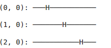

Quantum computing con Cirq
In questo post si parla della programmazione in Python di un quantum in Colab Notebooks, naturalmente è possibile installare le sottostanti librerie in un proprio
ambiente virtuale ad esempio tramite Anaconda/Conda o tramite lo stesso Python.
Ora analizziamo come creare dei cicuiti con il framework Cirq.
Con Cirq è possibile realizzare un circuito quantistico partendo dalla unità più piccola che sono le Operation.
Una operation, ad esempio un gate, è una operazione che modifica lo stato di un qubit.
L'insieme di diverse operation compongono un Moment che come si evince dall'immagine sottostante è composto da diverse operationeseguite su diversi
qubit.
Mentre la totalità dei Moment compongono il Circuit.
Come vedremo poi negli esempi sottostanti prima si definisce il circuito poi si possono aggiungere uno o più Momentum con diverse tecniche.
Ora prima installiamo e poi importiamo le librerie necessarie per creare i circuiti.
!pip install qiskit-terra[visualization]
!pip install cirq
from qiskit.visualization import plot_bloch_multivector, plot_histogram
import cirq
import sympy
import numpy as np
# visualization tools
%matplotlib inline
import matplotlib.pyplot as plt
from cirq.contrib.svg import SVGCircuit
Per iniziare definiamo 2 simboli s1 ed s2 che poi verranno inseriti nel circuito.
Creiamo prima 2 qubits, q0 e q1 poi il circuit a cui nel momento della creazione
inseriamo con delle Operation dei Gate di rotazione negli assi x, y e z poi il Gate CNOT.
s1, s2 = sympy.symbols('s1 s2')
# Create two qubits
q0, q1 = cirq.GridQubit.rect(1, 2)
# Create a circuit
circuit = cirq.Circuit(
cirq.rx(s1).on(q0),
cirq.rz(3.2).on(q0),
cirq.ry(s2).on(q1), cirq.CNOT(q0,q1))
SVGCircuit(circuit)
Ora assegniamo dei valori ai simboli inseriti nel circuito e facciamo una simulazione
del circuito dove ris è il risultato ottenuto con le relative sfere di Block dei 2 qubit
#Calculate a state vector
param = cirq.ParamResolver({s1: 8.7, s2: -3.4})
ris = cirq.Simulator().simulate(circuit, param).final_state
ris
array([-0.00133373-0.04565706j, -0.01026521-0.35140425j,
0.9268634 +0.02707551j, 0.12042501+0.00351785j], dtype=complex64)
plot_bloch_multivector(ris)
Nel circuito inseriamo la funzione measure per determinare il valore 0 o 1 per i qubits
che ci interessano in questo caso prendiamo l'output di q0 e q1 e visualizziamo di nuovo il
circuito con i simboli inseriti
circuit.append(cirq.measure(q0,q1, key="z"))
SVGCircuit(circuit)
Qui dopo aver inserito i dati dei parametri simuliamo per 500 ripetizioni il circuito e vediamo l'esito
nell'istogramma sottostante
param = cirq.ParamResolver({s1: 10.2, s2: -314})
res =cirq.Simulator().run(program=circuit, param_resolver=param, repetitions=500)
# plot the output distribution
cirq.plot_state_histogram(res)
Creiamo un nuovo modello ma con 4 qubits e 3 parametri simbolici e la misurazione di tutti i qubits
e la visualizzazione del circuito creato
s1, s2, a = sympy.symbols('s1 s2 a')
q0, q1, q2, q3 = cirq.GridQubit.rect(2, 2)
# Create a circuit
circuit = cirq.Circuit(
cirq.H.on(q0),
cirq.H.on(q1),
cirq.H.on(q2),
cirq.H.on(q3),
cirq.rx(s1).on(q0),
cirq.X.on(q2),
cirq.ry(s2).on(q3))
circuit += cirq.Circuit(
cirq.rz(a).on(q1), cirq.CNOT(q0,q1))
circuit.append(cirq.measure(q0,q1,q2,q3))
SVGCircuit(circuit)
Inseriamo dei valori per i simboli inseriti nel modello ed eseguiamo una simulazione del
circuito prendendo i valori finali della simulazione per ciascun qubits ( ris ) e visualizziamo
l'array ottenuto nell' immagine sottostante
param = cirq.ParamResolver({s1: 2, s2: -34, a:150 })
ris = cirq.Simulator().simulate(circuit, param).final_state
ris
Eseguiamo la stampa della sfera di Bloch con i dati ottenuti. Nell'immagine si può osservare
per ciascun qubit l'esatta posizione all'interno della sfera
plot_bloch_multivector(ris)
Creazione di un altro circuito. Da notare che i 4 qubits creati vengono inseriti nella
lista qubits in modo da poter utilizzare le caratteristiche delle liste
qubits = cirq.GridQubit.rect(2, 2)
alpha = sympy.Symbol('alpha')
beta = sympy.Symbol('beta')
gamma = sympy.Symbol('gamma')
circuit = cirq.Circuit(
cirq.rx(alpha).on(qubits[0]),
cirq.rx(gamma).on(qubits[1]),
cirq.X.on(qubits[2]),
cirq.ry(beta).on(qubits[3]))
for qu in qubits:
circuit.append(cirq.H.on(qu))
circuit.append(cirq.measure(*qubits, key='mec'))
print(circuit)
Con la funzione sweep è possibile simulare, come vediamo con i comandi sottostanti, la
ripetizione dell'esecuzione del circuito più volte modificando i parametri inseriti con i
simboli. In questo esempio inseriamo per i parametri alpha, beta e gamma dei valori che
partono da 0,1 fino a 1 con lunghezza di 5 casi per simbolo per un totale di 15 combinazioni. In questo modo si possono simulare e valutare la creazione
di diversi circuiti con i parametri desiderati. Sotto viene presentato l'istogramma con l'esito
di 200 reiterazioni
sweep = (cirq.Linspace(key='alpha', start=0.1, stop=1, length=5)
* cirq.Linspace(key='beta', start=0.1, stop=1, length=5)
* cirq.Linspace(key='gamma', start=0.1, stop=1, length=5))
results = cirq.Simulator().run_sweep(circuit, params=sweep, repetitions=200)
cirq.plot_state_histogram(result)
Come accennato prima ci sono diversi metodi per costruire un circuito ed ora passiamo
in dettaglio questi metodi
!pip install cirq
import cirq
import sympy
import numpy as np
# visualization tools
%matplotlib inline
import matplotlib.pyplot as plt
from cirq.contrib.svg import SVGCircuit
# define the length of the grid.
length = 3
# define qubits on the grid.
qubits = [cirq.GridQubit(i, j) for i in range(length) for j in range(length)]
print(qubits)
[cirq.GridQubit(0, 0), cirq.GridQubit(0, 1), cirq.GridQubit(0, 2), cirq.GridQubit(1, 0),
cirq.GridQubit(1, 1), cirq.GridQubit(1, 2), cirq.GridQubit(2, 0), cirq.GridQubit(2, 1), cirq.GridQubit(2, 2)]
Inseriamo gate H(hadamard) nei qubits pari e gate X nei qubits dispari
circuit = cirq.Circuit()
circuit.append(cirq.H(q) for q in qubits if (q.row + q.col) % 2 == 0)
circuit.append(cirq.X(q) for q in qubits if (q.row + q.col) % 2 == 1)
print(circuit)
Insert GATE in diversi moment
circuit = cirq.Circuit()
circuit.append([cirq.H(q) for q in qubits if (q.row + q.col) % 2 == 0],
strategy=cirq.InsertStrategy.EARLIEST)
circuit.append([cirq.X(q) for q in qubits if (q.row + q.col) % 2 == 1],
strategy=cirq.InsertStrategy.NEW_THEN_INLINE)
print(circuit)
simulator = cirq.Simulator()
#circuit = cirq.Circuit()
#circuit.append(funz(0.1, 0.2, 0.3))
circuit.append(cirq.measure(*qubits, key='x'))
results = simulator.run(circuit, repetitions=100)
print(results.histogram(key='x'))
Counter({255: 7, 447: 7, 507: 6, 238: 6, 430: 5, 174: 5, 250: 5, 506: 4, 239: 3,
442: 3, 494: 3, 251: 3, 171: 3, 510: 3, 446: 3, 491: 3, 431: 3, 187: 3, 495: 3,
511: 3, 443: 3, 190: 2, 235: 2, 427: 2, 175: 2, 426: 2, 170: 2, 490: 1, 254: 1, 186: 1, 191: 1})
#Creo una istanza dell'oggetto Pauli X gate
x_gate = cirq.X
# metto il gate in una operation.
x_op = x_gate(qubits[0])
print(x_op)
# prints "X((0, 0))"
Moments
cz = cirq.CZ(qubits[0], qubits[1])
x = cirq.X(qubits[2])
moment = cirq.Moment([x, cz])
print(moment)
X((0, 2)) and CZ((0, 0), (0, 1))
altro metodo x creare momentum
cz01 = cirq.CZ(qubits[0], qubits[1])
x2 = cirq.X(qubits[2])
cz12 = cirq.CZ(qubits[1], qubits[2])
moment0 = cirq.Moment([cz01, x2])
moment1 = cirq.Moment([cz12])
circuit = cirq.Circuit((moment0, moment1))
print(circuit)
Metodo append per costruire circuito
from cirq.ops import CZ, H
q0, q1, q2 = [cirq.GridQubit(i, 0) for i in range(3)]
circuit = cirq.Circuit()
circuit.append([CZ(q0, q1), H(q2)])
print(circuit)
Append un intero moment al circuito
circuit.append([H(q0), CZ(q1, q2)])
print(circuit)
Vediamo ora i seguenti metodi :
InsertStrategies
InsertStrategy.EARLIEST
InsertStrategy.NEW
InsertStrategy.INLINE
InsertStrategy.NEW_THEN_INLINE
from cirq.circuits import InsertStrategy
circuit = cirq.Circuit()
circuit.append([CZ(q0, q1)])
circuit.append([H(q0), H(q2)], strategy=InsertStrategy.EARLIEST)
#aggiunta nel primo moment libero vedi q2
print(circuit)
circuit = cirq.Circuit()
circuit.append([H(q0), H(q1), H(q2)], strategy=InsertStrategy.NEW)
#ogni append crea un nuovo moment
print(circuit)

circuit = cirq.Circuit()
circuit.append([CZ(q1, q2)])
circuit.append([CZ(q1, q2)])
circuit.append([H(q0), H(q1), H(q2)], strategy=InsertStrategy.INLINE)
print(circuit)
circuit = cirq.Circuit()
circuit.append([CZ(q1, q2)])
circuit.append([CZ(q1, q2)])
circuit.append([H(q0), H(q1), H(q2)], strategy=InsertStrategy.INLINE)
#add the operation insert into moment just before the desired insert location
print(circuit)
circuit = cirq.Circuit()
circuit.append([H(q0)])
circuit.append([CZ(q1,q2), H(q0)], strategy=InsertStrategy.NEW_THEN_INLINE)
print(circuit)
from cirq.ops import CNOT
from cirq.devices import GridQubit
q0, q1 = (GridQubit(0, 0), GridQubit(0, 1))
print(CNOT.on(q0, q1))
CNOT((0, 0), (0, 1))
import cirq
print(cirq.unitary(cirq.X))
# prints
# [[0.+0.j 1.+0.j]
# [1.+0.j 0.+0.j]]
sqrt_x = cirq.X**0.5
print(cirq.unitary(sqrt_x))
# prints
# [[0.5+0.5j 0.5-0.5j]
# [0.5-0.5j 0.5+0.5j]]
circuit = cirq.Circuit()
circuit.append([H(q0)])
circuit.append([CZ(q1,q2), H(q0)], strategy=InsertStrategy.NEW_THEN_INLINE)
circuit.append([H(q0)])
circuit.append([CZ(q1,q2), H(q0)], strategy=InsertStrategy.NEW_THEN_INLINE)
for i, step in enumerate(simulator.simulate_moment_steps(circuit)):
print('risultato allo step %d: %s' % (i, np.around(step.state_vector(), 3)))
state at step 0: [ 0.707+0.j 0. +0.j 0. +0.j 0. +0.j 0.707+0.j -0. +0.j -0. +0.j -0. 0.j]
state at step 1: [ 1.+0.j 0.+0.j 0.+0.j -0.+0.j -0.+0.j 0.+0.j 0.+0.j 0.+0.j]
state at step 2: [ 0.707+0.j 0. +0.j 0. +0.j 0. +0.j 0.707+0.j -0. +0.j -0. +0.j -0. +0.j]
state at step 3: [ 1.+0.j 0.+0.j 0.+0.j -0.+0.j -0.+0.j 0.+0.j 0.+0.j 0.+0.j]